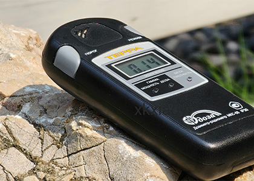
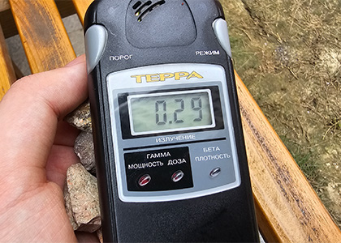
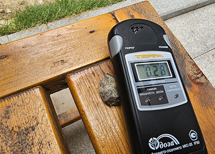
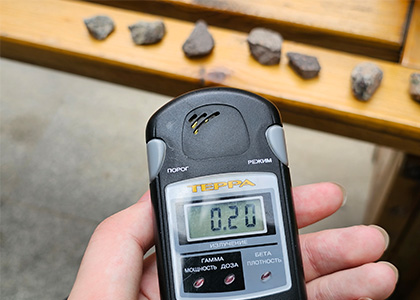
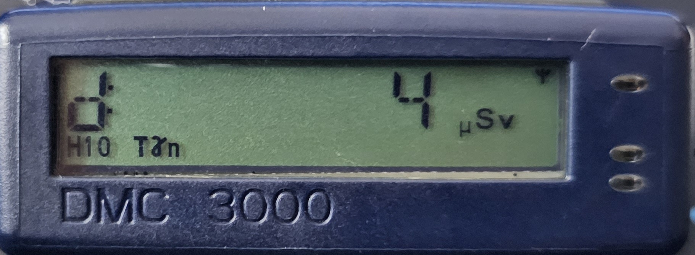
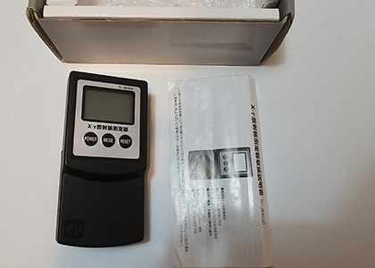
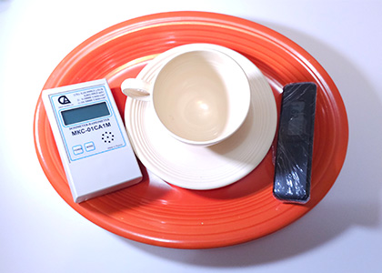
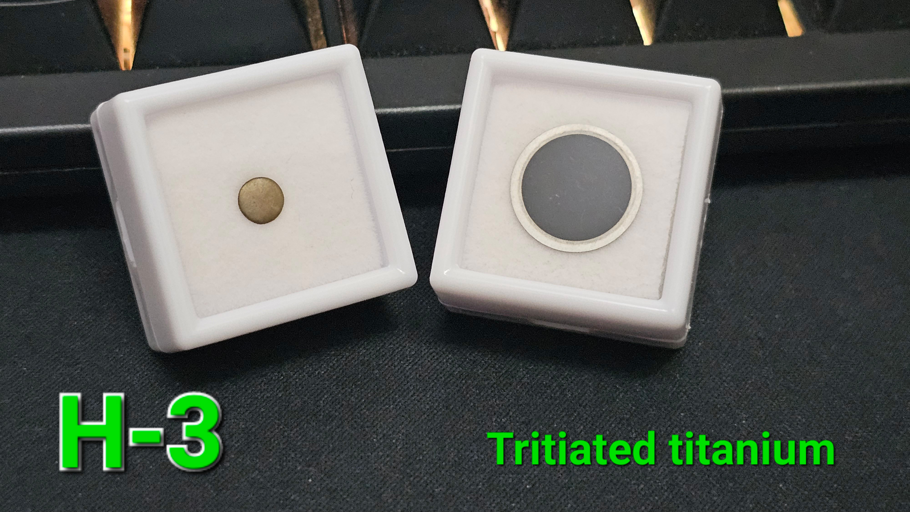
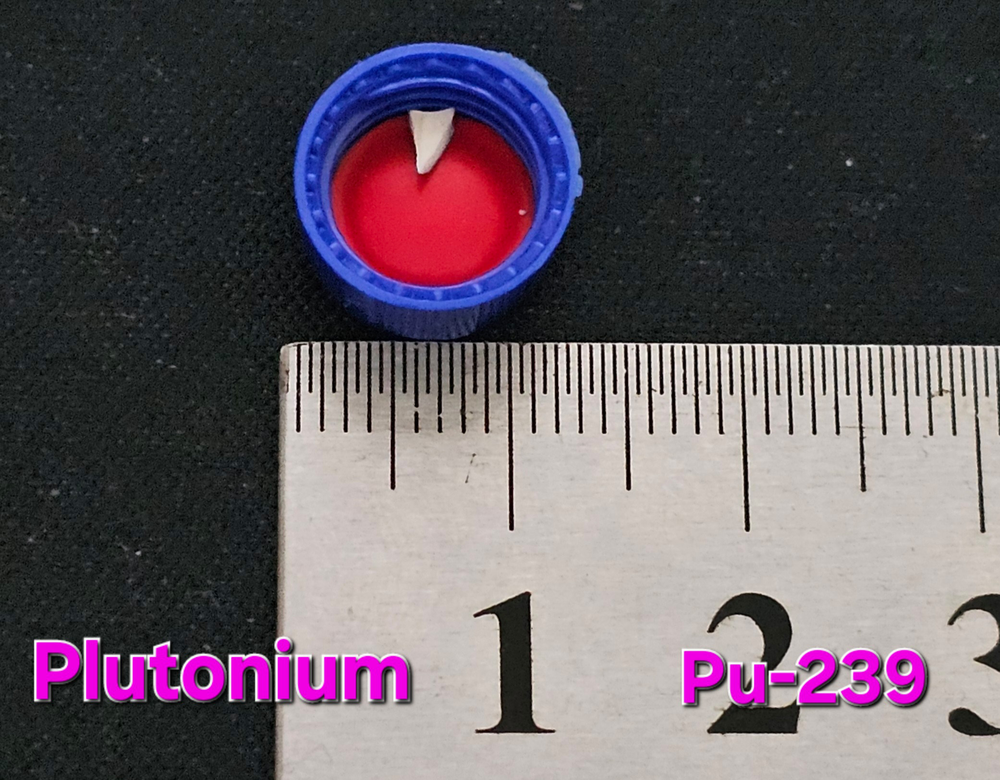

文章与笔记/站点记录
网站一周年！
本页目录 4 节
这是我建立网站的一周年，虽然这篇文章来迟了几天(◠‿・)—☆
在建站之初我们还处在Covid-19大封锁下，这一年发生了许许多多的事情...那时候我也正好感染了Covid-19，直到半年后才完全痊愈。
在这一年中:
- 总浏览量2500+，来自全球数十个国家、六大洲的用户！
- 帖子数量 - 38（包括这一篇）
- 平均浏览量 - 每天 8-9 次
- 最受欢迎的帖子：
仪表的采购种类繁多，从盖革管到半导体：
- 盖革管仪表：GC-01、KB6011、NEW KB6011、MKS-05、PM1621、ИРД-02、ZKO-01、miniTRACE、MKC-01CA1M、JB4020以及各类盖革管
- 闪烁体仪表：TCS-172B、Ludlum 44-2、RadiaCode 102、ES-GC02、RM2030以及来自墨西哥产的伽马光谱仪若干台
- 个人剂量仪：DCM2000GN、DCM3000、PM1621
- 多功能仪表：miniTRACE、Ludlum 2241
- 环境监测站：RM2030
主观上最值得推荐的仪表
第一名绝对是MKS-05(TERRA)！毋庸置疑的！
这是ECOTEST的专业型产品
它在便携性、易用性和灵敏度上找到了一个非常好的平衡点。




第二名我会给DMC3000。
它拥有令人惊叹的能响范围和剂量指示范围，但按钮我认为较难以使用

第三名我给了JB4020。
虽然它采用的传感器灵敏度并不高，但算法非常强大，使其获得了超高的灵敏度，并对微小的辐射变化给与响应。
100%中国制造。

辐射收藏品
我因为评测等原因买了各种放射性物质，其中一部分在做完评测后就被处理了，也有一些我很喜欢并保留了下来。
我总结了三件我最喜欢的物品。
铀陶瓷餐具。
可以合法获得U-235全能峰的物品( ◜‿◝ )♡
不知为何，我非常痴迷于这类物品(也包括铀玻璃)

钛化氚。
如图所示：

钚陶瓷碎片。
唯一（？可以合法获得的钚?
由反应堆级钚构成，写Pu-239是因为它比较有代表性。

其他
还有一些无用的东西：
GDB03、GDB52L光电倍增管
仪器设备：
UT4102C示波器、Ludlum校准器、UT89X万用表、AT3Γ光谱分析仪
有人评论该网站看上去像90年代的网站，确实，我不喜欢弄一些复杂的东西，对我而言，可以从中获取到内容就足够了。
最后
这是网站的第一年，我希望能持续下去，当然这不是我第一次做这种事
比较遗憾的是Blog站关站了，本来想写一些东西的，どうでも
这一年发生的事情太多，我不知道要怎么表达，最近一段时间我的精神状态也不是很好
我还能撑多久呢...
我厌倦了做同样的事情，所以我总是跟随自己的兴趣……
不知道未来会怎样，我还会写下去的，大概..